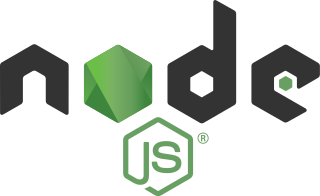

Что такое Node.js и где применяется?
Node.js — среда выполнения кода JavaScript вне браузера. Эта платформа позволяет писать серверный код для динамических веб-страниц и веб-приложений, а также для программ командной строки. С помощью Node.js реализуется парадигма «JavaScript для всего». Она предполагает использование одного языка программирования для разработки веб-приложений вместо применения разных языков для работы над фронтендом и бэкендом.
Чаще всего эту платформу используют для создания веб-сервисов, требующих интенсивного обмена информацией с пользователями, в том числе, для реализации чатов, систем совместной работы, социальных сетей и т.д. Многие программы, созданные на Node.js, состоят из серверной и клиентской частей.
Почему именно Node js?
Наиболее значимое преимущество — неблокирующая модель ввода-вывода. Эта система управляема событиями и работает асинхронно, выстраивая очередь по приоритетности. Когда к серверу одновременно подключаются тысячи людей, ей легче справиться с нагрузкой, так как нет надобности создавать отдельный поток для каждого подключения. Грамотное распределение ресурсов помогает выдержать большее количество соединений.
Известные проекты, написанные на Node
- Mozilla.Разработчики браузера говорят о том, что Node сильно упростил работу, как минимум, по двум причинам. Первая - использование одного языка для бекенда и фронтенда, а вторая - объем памяти, необходимой для функционирования системы.
- Paypal. Система Илона Маска, Макса Левчина, Питера Тиля, Ю Пана, Кена Хауэри и Люка Носека, позволяющая работать с платежами, без обмена финансовой информацией. По данным за 2018 год, на сайте насчитывалось 227 миллионов активных аккаунтов. Создание приложения заняло в два раза меньше времени, чем на Java.Также сократились объемы конструкций и уменьшилось количество файлов. Программисты, работающие над Paypal заявляют, что Node помог наладить связь между браузером и сервером благодаря тому, что обе стороны написаны на одном языке.
- eBay. 170 миллионов пользователей оценили понятное, шустрое и хорошо организованное приложение. Создатели стремились к созданию как можно более отзывчивой веб-платформы — интерактивной и способной взаимодействовать с посетителями в режиме реального времени. Они выполнили не только это, но и наладили взаимодействие сервисов, информация из которых нонстопом обновляется на страницах сайта.